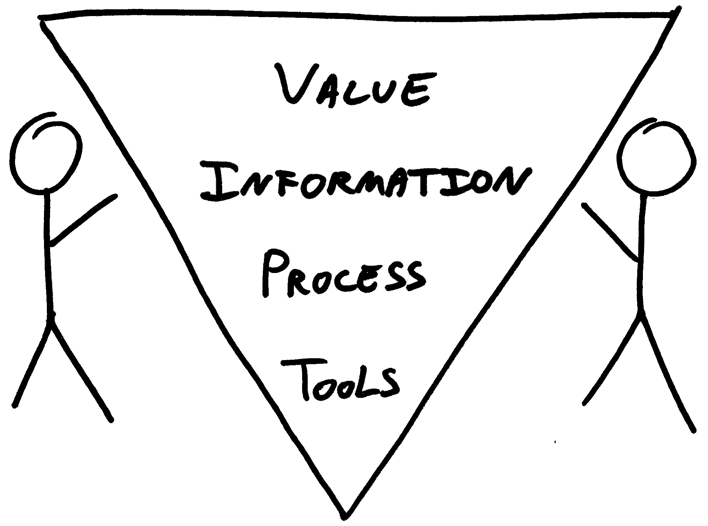

There are good practices in context, but there are no best practices.
People, working together, are the most important part of any project’s context.
Projects unfold over time in ways that are often not predictable.
The product is a solution. If the problem isn’t solved, the product doesn’t work.
Good software testing is a challenging intellectual process.
Only through judgment and skill, exercised cooperatively throughout the entire project, are we able to do the right things at the right times to effectively test our products.
testing is
an information problem
a people problem
information
process
tools
value
information
process
tools
from tools to value
or
from value to tools?
and what about people?
the model

the 7 principles of context-driven testing
The value of any practice depends on its context.
There are good practices in context, but there are no best practices.
People, working together, are the most important part of any project’s context.
Projects unfold over time in ways that are often not predictable.
The product is a solution. If the problem isn’t solved, the product doesn’t work.
Good software testing is a challenging intellectual process.
Only through judgment and skill, exercised cooperatively throughout the entire project, are we able to do the right things at the right times to effectively test our products.
thank you!
j19sch.github.io
testingcurve.wordpress.com
@j19sch
main points of this talk
distinguish tools, from process, from information
without value nothing really matters
work from value to tools
people are inherently of value
find your own way to express CDT
The danger with codifying method as tools is that by ignoring context it obviates the requirement to understand the problem. - John Seddon
testing is a wicked problem
The problem is not understood until after the solution is found.
Wicked problems have no stopping rule.
Solutions to wicked problems are not right/wrong, but better/worse.
Problems and symptopms are hard to separate - every problem is a symptom.
Every wicked problem is essentially novel and unique.
There is no exhaustively describale set of solutions or permissible operations.
source: James Lynsday
meta-source: Horst Rittel, Melvin Webber - Dilemmas in a General Theory of Planning (1973)
source of meta-source: Joris Meerts, @testingref
main philospical influences on this talk
Hume: empiricism
Schopenhauer: world as representation
Levinas: ethics before ontology
Kant: never treat others as mere means
Kant: Enlightenment is man's emergence from his self-imposed nonage.
The world is my representation": this is a truth valid with reference to every living and knowing being, although man alone can bring it into reflective, abstract consciousness. If he really does so, philosophical discernment has dawned on him. It then becomes clear and certain to him that he does not know a sun and an earth, but only an eye that sees a sun, a hand that feels an earth; that the world around him is there only as representation, in other words, only in reference to another thing, namely that which represents, and this is himself.
The world as will and representation - Arthur Schopenhauer
Enlightenment is man's emergence from his self-imposed nonage. Nonage is the inability to use one's own understanding without another's guidance. This nonage is self-imposed if its cause lies not in lack of understanding but in indecision and lack of courage to use one's own mind without another's guidance. Dare to know! (Sapere aude.) "Have the courage to use your own understanding," is therefore the motto of the enlightenment.
What is Enlightenment? - Immanuel Kant
Computers and their software are two things. As collections of interacting cogs they must be ‘checked’ to make sure there are no missing teeth and the wheels spin together nicely. Machines are also ‘social prostheses’, fitting into social life where a human once fitted. It is a characteristic of medical prostheses, like replacement hearts, that they do not do exactly the same job as the thing they replace; the surrounding body compensates.
Contemporary computers cannot do just the same thing as humans because they do not fit into society as humans do, so the surrounding society must compensate for the way the computer fails to reproduce what it replaces. This means that a complex judgment is needed to test whether software fits well enough for the surrounding humans to happily ‘repair’ the differences between humans and machines. This is much more than a matter of deciding whether the cogs spin right.
Harry Collins - http://www.developsense.com/blog/2014/03/harry-collins-motive-for-distinctions/